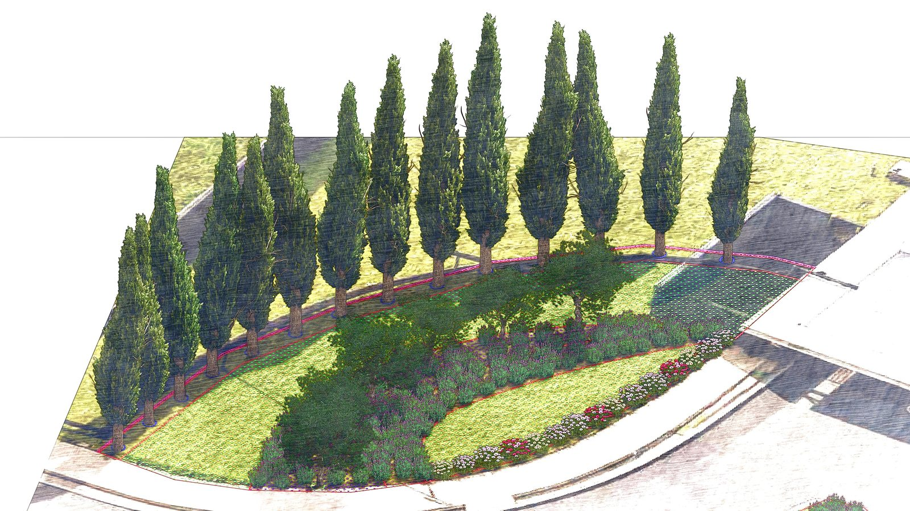
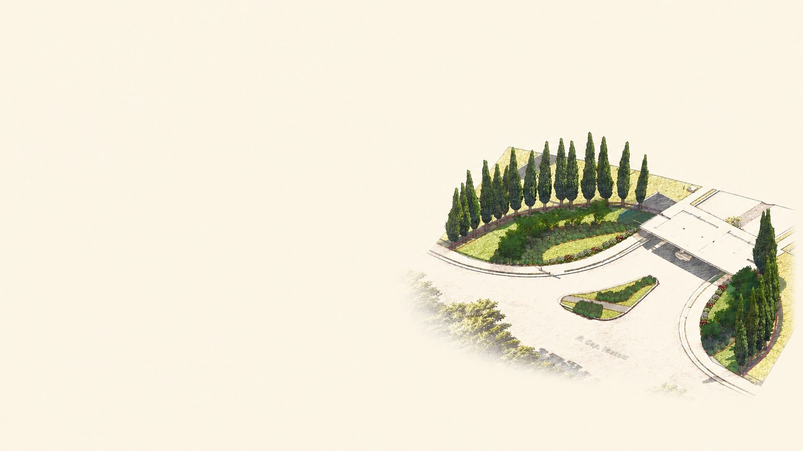
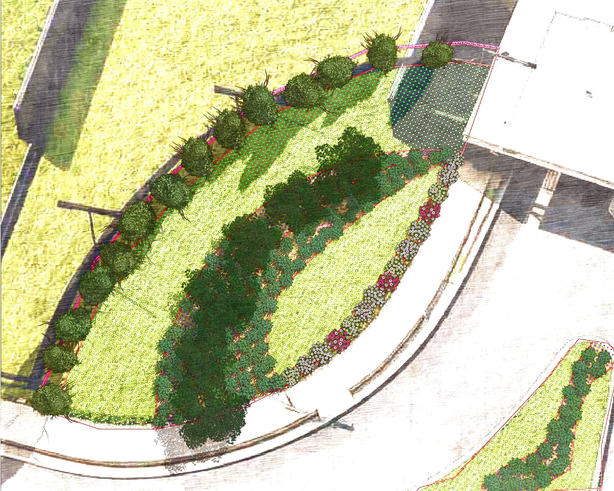

01 — Fachada principal

02 — Vista lateral

03 — Vista geral

04 — Anteprojeto isometrico

05 — Composicao ornamental
A primeira impressao de um condominio nao e a portaria. E o jardim que o morador ve todo dia ao sair — e que o visitante ve antes de qualquer coisa. Esta proposta foi desenvolvida para transformar a fachada do Residencial Florenca em uma identidade paisagistica que nao se esquece.

A Gardenia nasce da uniao entre tecnica, experiencia e sensibilidade no cuidado com os jardins. Cada espaco verde possui um ritmo proprio — e o paisagismo vai alem da estetica: trata-se de compreender o ambiente, respeitar os ciclos da natureza e criar paisagens que evoluem ao longo do tempo.
Parte dessa experiencia foi construida ao longo de anos de atuacao em Londres, com contato direto com projetos de paisagismo sustentavel e praticas inspiradas na permacultura.
Para o Residencial Florenca, o objetivo e claro: criar uma identidade paisagistica marcante na fachada principal — que valorize o empreendimento, acolha quem chega e eleve a percepcao de todos os moradores sobre o lugar onde vivem.

A inspiracao e mediterranea. A execucao e tecnica. O resultado e inconfundivel. A proposta parte de uma linguagem ornamental que remete ao sul da Europa — volumetrias verticais marcantes, flores de solo, arbustos aromaticos e o verde profundo dos ciprestes como espinha dorsal de toda a composicao.
A escolha das especies foi pensada para transmitir sofisticacao visual sem abrir mao da funcionalidade. Cada planta tem seu papel na composicao — e juntas criam uma identidade paisagistica que amadurece e se consolida ao longo do tempo.
O projeto contempla a reorganizacao completa da area denominada "Ilha 01". O resultado: uma fachada que nao parece apenas cuidada. Parece projetada.

O anteprojeto tridimensional e desenvolvido para que o condominio possa analisar e aprovar a proposta com total clareza visual — antes de qualquer execucao. As imagens apresentadas nesta proposta sao parte desse processo.

A proposta contempla a distribuicao estrategica de especies ornamentais ao longo das areas de implantacao — priorizando composicao visual, integracao paisagistica e desenvolvimento adequado de cada especie ao longo do tempo.
Do estudo preliminar a composicao final do jardim, o processo foi desenhado para ser transparente, organizado e sem surpresas para o condominio.
O plano de manutencao garante a adaptacao adequada das especies, a preservacao estetica do projeto e a durabilidade do investimento realizado. As visitas tem como objetivo preservar a identidade visual do projeto paisagistico ao longo do tempo.
Durante o periodo inicial de adaptacao, a irrigacao sera realizada manualmente pela equipe de manutencao — garantindo suporte hidrico adequado para o desenvolvimento saudavel do paisagismo implantado.
Estamos a disposicao para esclarecimentos, ajustes e qualquer conversa necessaria para que este projeto se torne realidade.